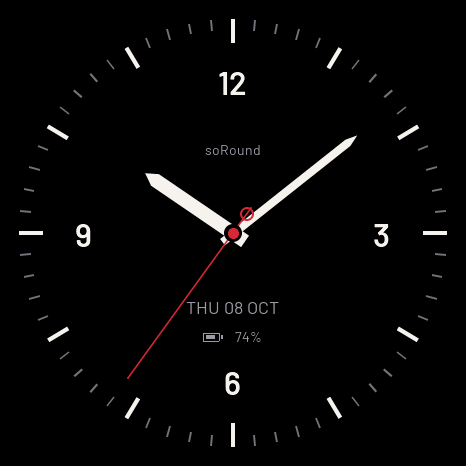
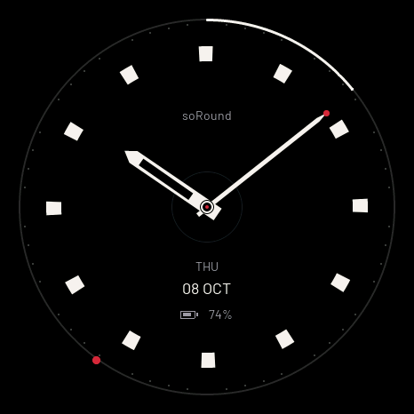
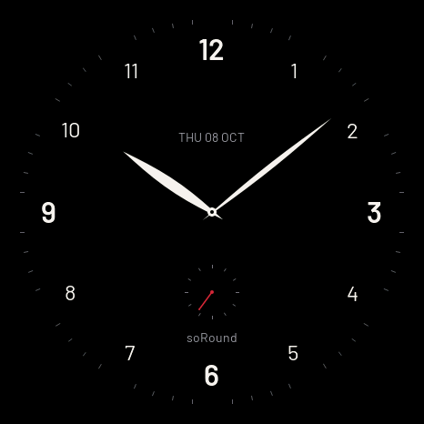
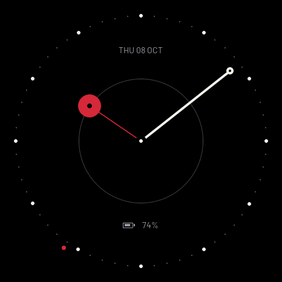
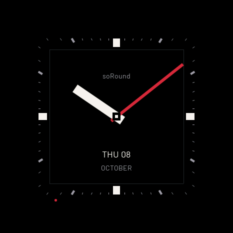
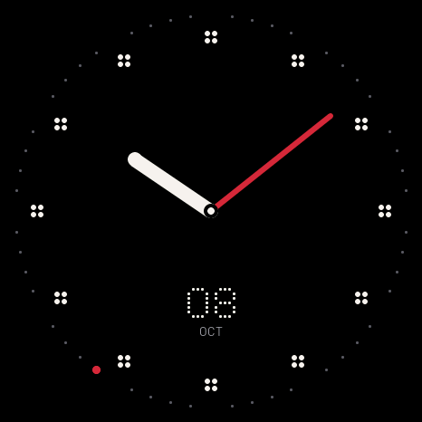

<!doctype html><html lang="zh-CN"><meta charset="utf-8"><meta name="viewport" content="width=1080"><title>六款指针</title><link rel="stylesheet" href="style.css">
    <main class="poster gallery-six" data-number="7"><header><div class="brand">soRound OS <span>明天 · 正式版见</span></div><div class="kicker">06 / 新表盘 · HAND</div><h1>还是指针，<br>也有新意思。</h1><p class="sub">刻度、弧线、数字、轨道、方框与圆点。</p></header><div class="content"><div class="gallery cols-3"><figure class=""><figcaption>刻度</figcaption></figure><figure class=""><figcaption>弧线</figcaption></figure><figure class=""><figcaption>数字</figcaption></figure><figure class=""><figcaption>轨道</figcaption></figure><figure class=""><figcaption>方框</figcaption></figure><figure class=""><figcaption>圆点</figcaption></figure></div></div><footer><span>原生 UI 渲染 · 画面数值为示例</span><span>07 / 10.23</span></footer></main></html>